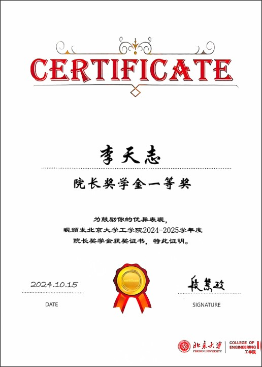

Awards and Honors
National Scholarship (top 1%)
Issued by Ministry of Education, China, Sep-2025
国家奖学金 (前 1%), 2025年9月
 |
Presidential Doctoral Scholarship 北京大学校长奖学金, 2025年6月 |
|  | Dean's Scholarship - First Prize 院长奖学金-博士一等奖 |
Excellent Academic Research Award (top 1%)
Issued by Peking University, Sep-2025
北京大学学术创新奖 (前 1%)，2025年9月
Merit Student Award (top 1%)
Issued by Peking University, Sep-2025
北京大学三好学生标兵 (前1%)，2025年9月
Yuehua Luo Scholarship
Issued by Peking University, Nov-2024
北京大学罗岳华奖学金，2024年11月
 |
|
 |
|
 |
|